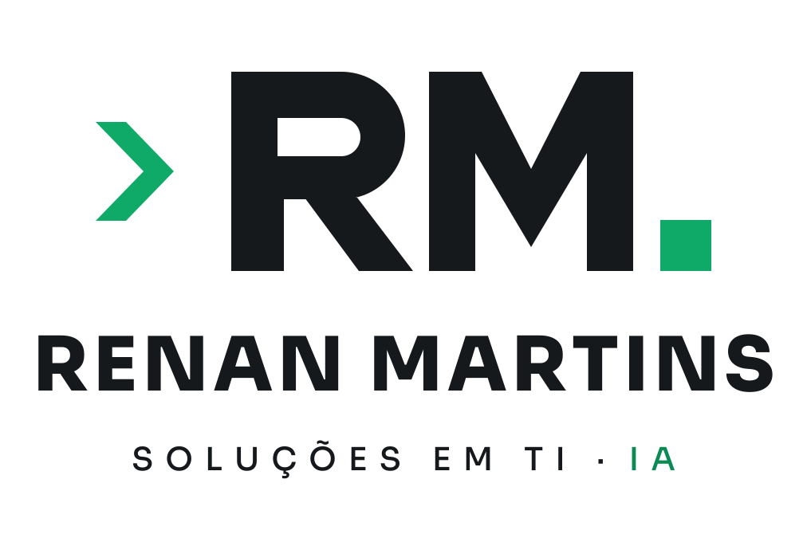
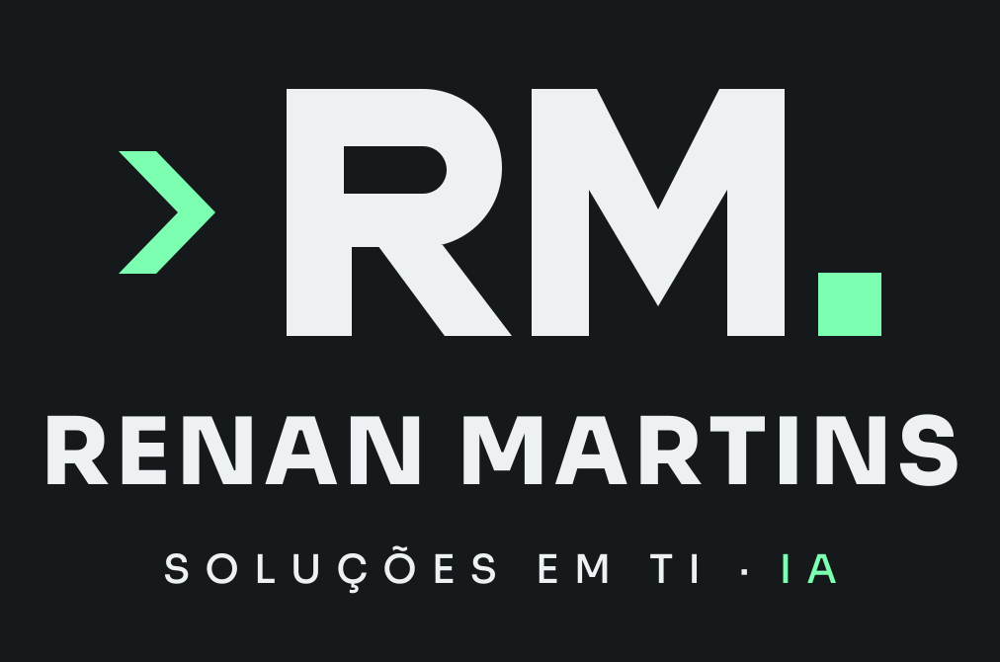
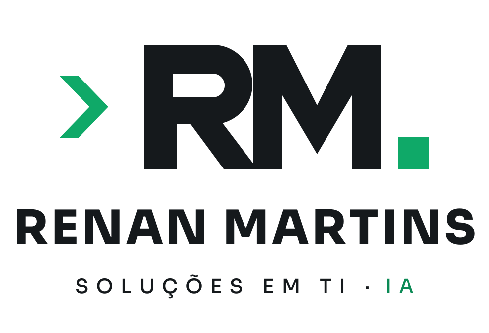
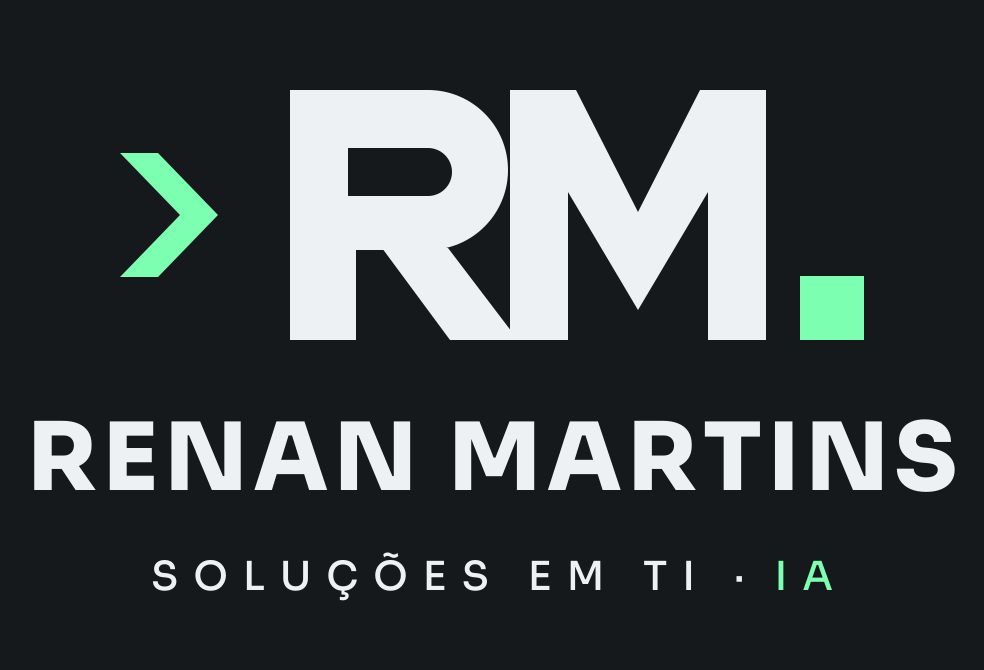

Proposta de logo desenhada a partir da referência aprovada. ">" desenvolve, RM executa, o quadrado conecta. Fundo claro usa verde mais escuro para ter contraste; fundo escuro usa o menta #7CFFB0.



